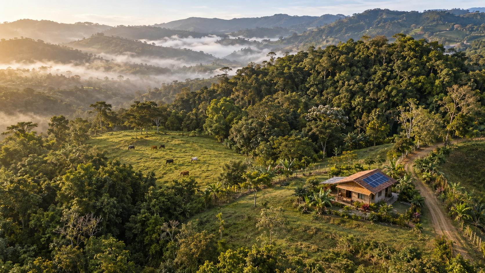
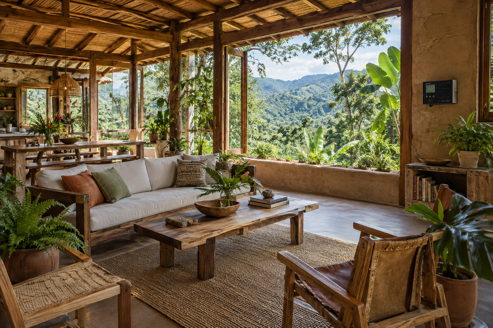
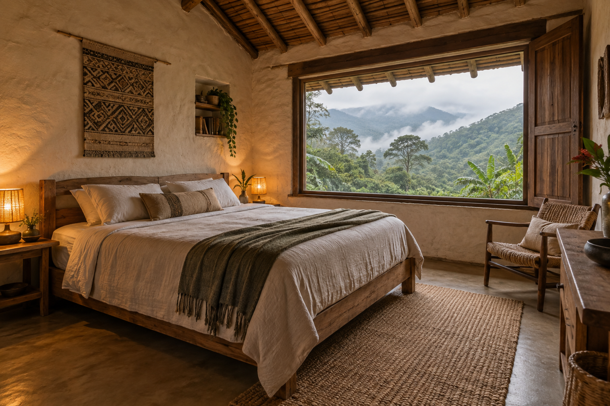

Explorador territorialCapas prediales, coberturas y red hídrica
Cargando capas del predio…
Mapa 2D
Zoom, consulta y análisis de capas
Zoom, consulta y análisis de capas
Terreno 3D
Arrastra para orbitar; rueda para acercar.
Arrastra para orbitar; rueda para acercar.



Vuelo sobre La Floresta
Bosque, pastos y vivienda sostenible en una lectura espacial inmersiva.
Pulsa sobre la edificación en Terreno 3D para iniciar este recorrido.